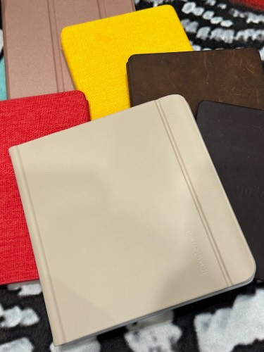
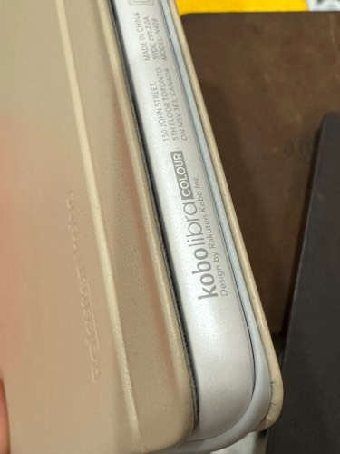

 최근 필요없는 물건들을 정리하는김에, 한참 잘 사용하던 코보 리브라, 코보 포르마를 정리했는데, 그러자마자 타이밍 좋게 코보 리브라 컬러가 발매된다는 소식을 들었다. 평소에 컬러 이북리더가 필요가 있는 물건인가? 이미 발매된 물건들을 보고도 크게 관심을 갖고 있진 않았는데, 단순히 디자인이 예쁘다는 이유로 구입했던 코보 리브라와 같은모양의...기기가 컬러사양으로 나온다는 말을듣고 조금 흥미가 생겼다. 그래서 보니 당장 5월1일이 발매일이었던고로, 커버와 같이 예약, 그리고 펜도 사야한다는 리뷰글을 보고 필기도 가능한 물건인가 하고 깨닫는다. 그래서 이거, 아이패드랑 차이가있나? 라고 생각했지만 굉장한 차이가 있었다는..  아이패드란 물건은 결국, 아이패드미니->책보려고 샀으나 유튜브머신, 아이패드프로->그림그리려고샀으나 부모님의 페이스타임머신, 아이패드->이건 그냥 진짜 동영상머신으로샀으나, 이것도 결국은 더 큰 화면인 노트북으로 보게 되더라. 그러고 나서 코보 리브라 컬러를 받았는데, 생각외로 굉장히 쓸모있는 물건이 아닌가. 실은 앞서말했듯이 코보 기기들을 정리한 이유가, 코보 플랫폼보다는 킨들을 더 많이 사용하고, 킨들 기기들이 더 사용하기 편리해서 라고 느낀 이유였는데, 킨들은 다만, 이메일이나 피씨에 연결해서 파일을 추가하는건 가능하지만, 기본적으로는 킨들책만을 위한 기기이고, 미국아마존, 일본아마존, 을 위한 기기를 가지고 있긴 하지만 결국 탈옥 등 통해서 koreader를 이용하거나, 한국서점의 어플을 설치해서 사용하는 등의 복잡한 설정이 필요하다. 코보도 마찬가지로, 한국서점의 앱을 설치할 수는 없지만 다만, Adobe digital editions를 통해 구글에서 구매한 책을 보거나, 직접 스캔하거나 소장중인 책들을 쉽게 넣어볼 수 있도록 기기내에서 dropbox, google drive등에 연결할 수 있는 기능을 제공한다. 얼마전만해도 책등을 잘라서 직접 책 스캐너에 넣어서 책을 스캔하고는 했는데, 요즘은 책 스캔하는 앱도 잘 나온다고하니, 잘 활용하면 굉장히 편리한 도구가 되지 않을까 싶다. 팬의 활용도도 생각보다 높아서, 밑줄긋기, 메모하기, 형광팬등의 기능이 아주 사용하기 편리했다. 그래서! 뭔가 다시 공부해볼까! 하고 흥미가 생기긴했는데 이것저것 하느라 아직 그냥 넣어뒀는데 ㅎㅎ 예전에 구매했던 일본어한자책이나 러시아어 책같은거 다시 이걸로 보면서 공부하면 참 좋을 것 같긴함. 쓰고보니, 책이 컬러라서 좋다기보다 형광팬이 컬러라서 좋은거구먼? 분명 킨들도 비슷한 리더를 내놓을텐데, 언제가 될지, 어떤 모습으로 나올지 궁금하네.